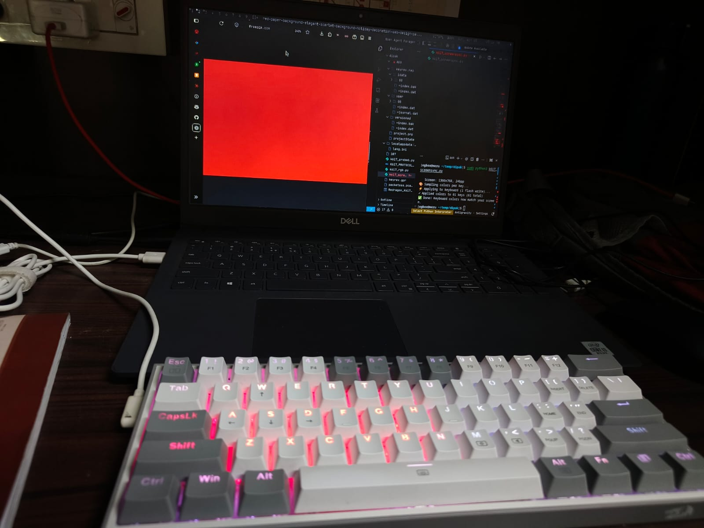
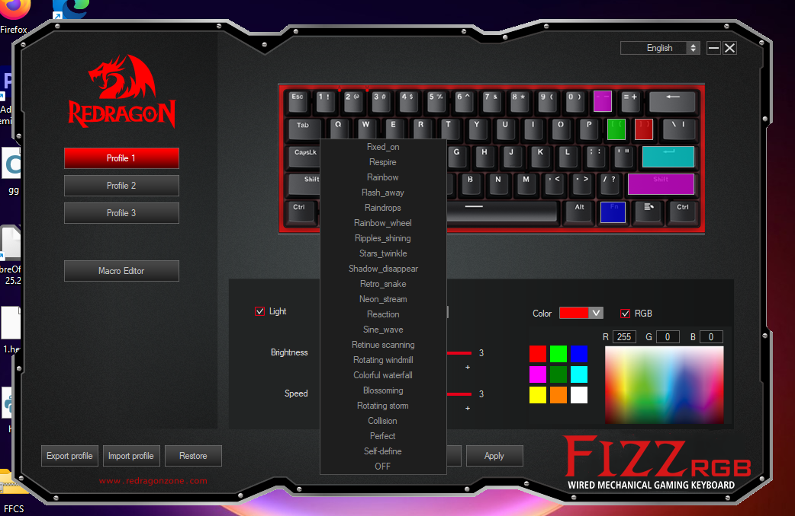
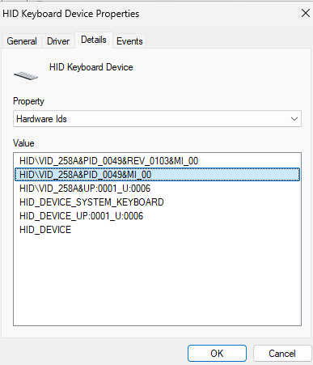
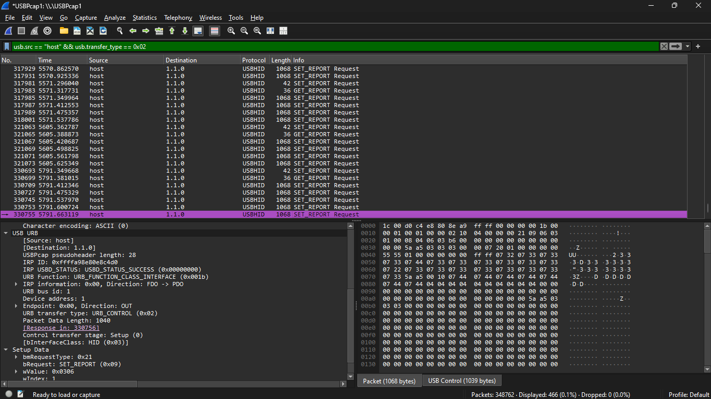
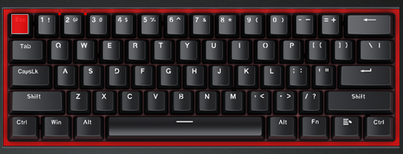

the final result — keyboard colors matching the screen
so i bought this Redragon K617 Fizz in my first year. a nice little 60% keyboard, nothing too fancy. but the one thing i always wanted was screen sync — like what Razer keyboards have, where the keyboard colors match whatever is on the screen. or even a volume visualizer kind of thing. that was always in the back of my head.
i was dual booting Arch and Windows back then. mainly used Arch for everything but some software only worked on Windows and running a VM consumed too many resources, so i just kept a dual boot. the Redragon RGB software was Windows-only though, and even on Windows it was pretty basic. no screen sync, no API, no way to control it programmatically.

the Redragon OEM software — Windows only, no API
fast forward about a year and three months. i was studying the AArch64 architecture (ARMv8) and for some reason i randomly got the idea that maybe i could reverse engineer this keyboard's protocol myself. no idea why that thought came up while reading about ARM, but it did. so that saturday morning i just went for it.
first step was figuring out what this keyboard actually is on USB. opened Device Manager on Windows, found the HID device, and grabbed the vendor and product IDs.

HID device properties — VID/PID identification
| field | value |
|---|---|
| keyboard | Redragon K617 Fizz (60%, wired) |
| controller | Sinowealth SH68F83 |
| USB VID | 0x258A |
| USB PID | 0x0049 |
| HID interface | Interface 1, usage page 0xFF00 (vendor-defined) |
| report size | 1032 bytes per packet |
the Sinowealth SH68F83 is a pretty common chip in budget keyboards. no public documentation, no SDK. everything about how it handles RGB is proprietary.
the plan was simple — set a color in the OEM software, capture whatever it sends over USB, and replay it from Linux. installed USBPcap on Windows, opened Wireshark, and started recording.

Wireshark capture of the RGB protocol
this is where i got stuck for a while. i was using a host-only filter on Wireshark, which meant i was
filtering out device-to-host traffic. turns out there is one critical packet in that direction — a
GET_REPORT handshake — and without it, every single write to the keyboard gets silently
ignored. no error, no feedback, just nothing happens. it took me hours to figure out that my filter was
hiding the one packet that makes the whole thing work.
once i removed that filter, i could see the full sequence. the protocol turned out to be exactly 5 packets, always in this order:
| step | type | size | purpose |
|---|---|---|---|
| 1 | SET_REPORT (id=0x05) | 6 bytes | INIT — tells firmware "i want to write colors" |
| 2 | GET_REPORT (id=0x06) | 1032 bytes | mandatory handshake — read and discard |
| 3 | SET_REPORT (id=0x06) | 1032 bytes | P1 — the RGB color canvas |
| 4 | SET_REPORT (id=0x06) | 1032 bytes | P2 — key routing (never modify) |
| 5 | SET_REPORT (id=0x06) | 1032 bytes | EXEC — flash commit with 5AA5 marker |
the P1 packet is where all the actual color data lives. it's a 1032-byte blob, but the interesting part is how colors are encoded. it's not RGB triplets per key like you would expect. instead it uses a split-plane architecture — one region for all blue values, one for all green values, one for all red values.
| channel | base offset | byte range |
|---|---|---|
| blue | 8 | bytes 5–126 |
| green | 134 | bytes 127–252 |
| red | 260 | bytes 281–378 |
the formula to set any key to any color:
p1[8 + led_index] = blue_value (0-255)
p1[134 + led_index] = green_value (0-255)
p1[260 + led_index] = red_value (0-255)i figured this out by flooding regions with 0xFF and watching which keys lit up and what
color. start with a range, see what happens, narrow it down. the data follows a stride-21 layout — each
keyboard row takes 14 bytes of actual data followed by a 7-byte gap. once i saw that pattern, mapping
individual keys became straightforward.
| probe | bytes written | result | conclusion |
|---|---|---|---|
| probe4 test0 | 281–378 = 0xFF | all keys red | red plane confirmed |
| probe5 test1 | 5–65 = 0xFF | rows 1–2 blue | blue rows 1–2 at bytes 5–65 |
| probe5 test2 | 127–187 = 0xFF | rows 1–2 green | green channel starts at 127 |
| probe5 test5 | 127–280 = 0xFF | all keys green | full green range confirmed |
| probe5 test16 | 281–287 = 0xFF | esc, 1, 2, 3, 4, 5, 6 red | red row 0 map + stride-21 confirmed |
i also tried opening the Redragon application in Ghidra to understand the protocol better. i could open
the binary but couldn't really find references to the byte values i was looking for — couldn't trace
where the app constructs those USB packets. but while digging through the software's directory, i found
a file called Cfg.ini that had the complete LED index mapping for all 61 keys. that saved a
lot of time, although by that point i had already figured out most of it manually through probing.
not everything went smoothly.
P2 corruption. any modification to the P2 (routing) packet caused the firmware to crash. the keyboard would just restart. i learned pretty quickly to treat P2 as read-only — copy it exactly from a known-good capture and never touch it.
flash writes every time. every EXEC packet contains a 5AA5 magic marker
that triggers a flash write. there is no RAM-only path — i tried skipping EXEC, zeroing out the 5AA5
marker, skipping P2, and even the OEM software's preview mode still flashes. the keyboard commits to
flash on every single color change. flash endurance on these Sinowealth chips is around 100,000 cycles.
that killed the real-time screen sync dream, at least with this approach.

per-key control working — only esc set to red
per-key RGB control works perfectly. i can set any of the 61 keys to any color independently. and i built
a screen sync tool on top of that — it captures a screenshot using maim, samples the color
at each key's physical position on the screen, maps those colors to the keyboard, and applies them in
one shot.
it's not real-time, but running it manually when you want your keyboard to match your screen is still
pretty satisfying. the script needs sudo to access the HID device, but then
maim can't access the X11 display because it's running as root. had to handle
DISPLAY and XAUTHORITY environment variables and run maim as the original user
to work around that.
one interesting direction for the future would be writing completely custom firmware. the SH68F83 is an 8051-based microcontroller, and if i could figure out how the LED matrix is wired to the board — like which rows and columns connect to which GPIO pins — i could flash my own firmware and have full control over everything. that's a much bigger project though.
USB HID is surprisingly approachable once you get past the initial confusion. feature reports, output
reports, usage pages — it sounds intimidating but Wireshark makes it very visual. the hardest part
wasn't the protocol itself, it was figuring out that one missing GET_REPORT handshake.
also learned that cheap keyboard controllers are surprisingly capable chips. the SH68F83 has a full 8051 core, handles USB, drives the LED matrix, scans the key matrix — all on one chip. reverse engineering it was a good intro to embedded systems without needing any extra hardware.